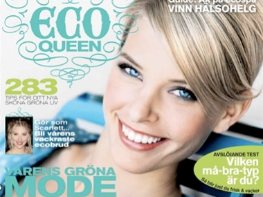

Min blogg





Köpte för första gången tidningen ECO Queen i tisdags, en bra tidning! Innehåller allt en tjej behöver få ut av en tidning med bonusen att det är ekologiskt. Jag försöker vara eko-medveten, fast jag skulle kunna bli mycket bättre. Sen jag fick barn har jag börjat köpa mer ekologiska matvaror och försöker även köpa kläder gjorda i ekologiskt bomull till döttrarna. Jag har en egen kompost i trädgården som jag tycker är super, eftersom jag får massa bra mylla till mina rabatter!
Tillbaka till tidningen. Där fanns en annons gällande ekologisk väggfärg, Sober Natur från ALCRO. Det gav mig idéen till att göra ett eko-smart barnrum. Väggarna och eventuella motiv målas med ekologisk väggfärg, alla tyger som används till gardiner och kuddar är gjorda i ekologisk bomull och all ”ny” inredning köper man begagnat, t.ex. via blocket.se eller tradera.com. Självklart kan man också gå och fynda på en vanlig loppis.
Ärvda möbler och inredning är ännu roligare! Gamla mörka byråar blir superfina om man målar dom i vit eller äggvit färg. För att göra det lite roligare så kan man antingen måla små motiv på lådorna eller skriva med fina bokstäver vad innehållet är. I mitt projekt Prinsessrum satte vi upp en kristallkrona i taket som var en gammal släktklenod, passade perfekt in med temat.
EKO rum
fr 8 maj 2009